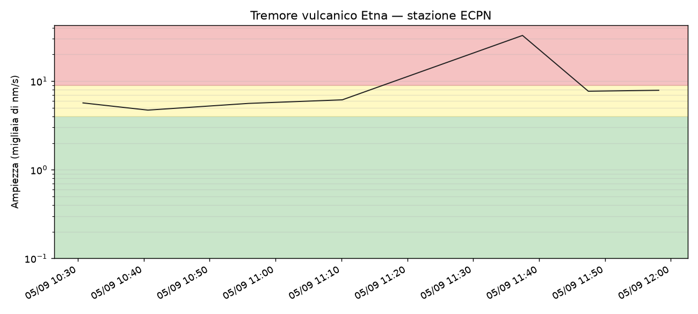

Caricamento dati...

Valore calcolato da forme d'onda sismiche pubbliche INGV (rete IV), aggiornato ogni 10 minuti. Bande: verde (quiete, < 4.000 nm/s), giallo (moderato, 4.000–9.000 nm/s), rosso (alto, > 9.000 nm/s).